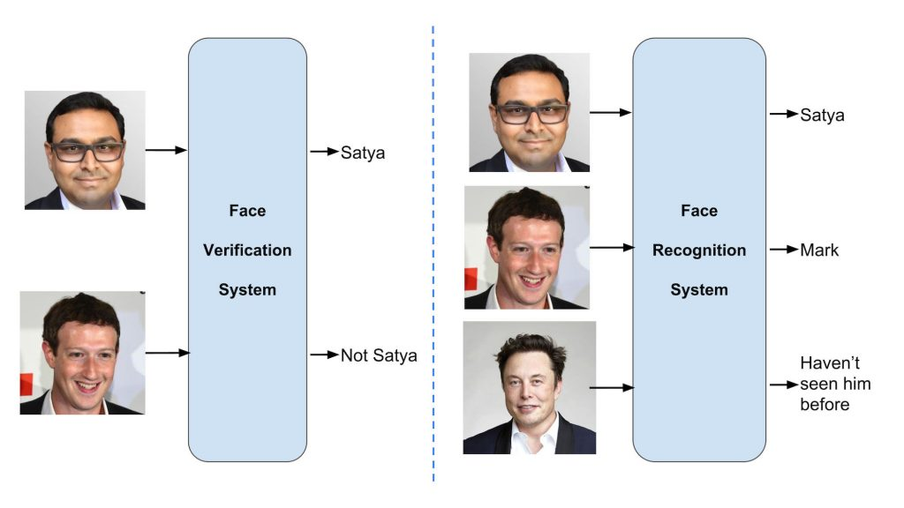

## Outline 1. Difference between detection vs. recognition. -- 2. Learning from ~~data~~ images. -- 3. Learning pipeline in computer vision. -- 4. Feature engineering (preprocessing, extraction, and postprocessing). -- 5. Eigen faces. --- ## General machine learning pipeline (supervised) | <img src="ml_pipeline_large.png" style="width:85%" /> | |--| | source: [© 2019 District Data Labs](https://districtdatalabs.silvrback.com/an-introduction-to-machine-learning-with-python) | --- ## Object detection vs recognition |  | |--| | source: [Learn OpenCV](https://www.learnopencv.com/face-recognition-an-introduction-for-beginners/) | --- ### Recognition 1. What is this object. 2. 1:n mapping. -- #### As a classification problem - Multiclass classifier: given $x$, return $y \in \{0, 1, \dots,m\}$ --- ### Detection 1. Is this object $x$ (true or false). 2. 1:1 mapping. -- #### As a classification problem - Binary classifier: given $x$, return $y \in \{1,-1\}$ -- - Alternatively, given $x$, return $y \in \mathbb{R}$ (real valued) -- - What do we call this function? -- - .red[Regression], or .red[regressor model] --- ## General --- ##